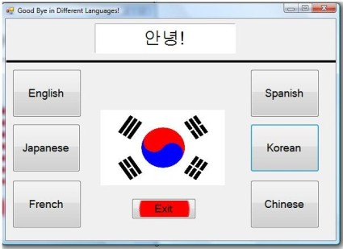
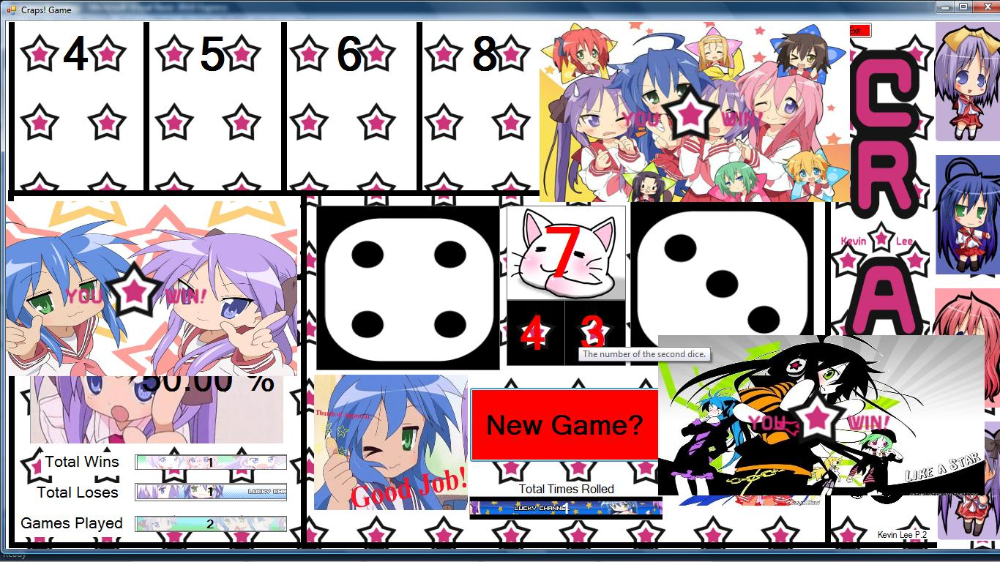
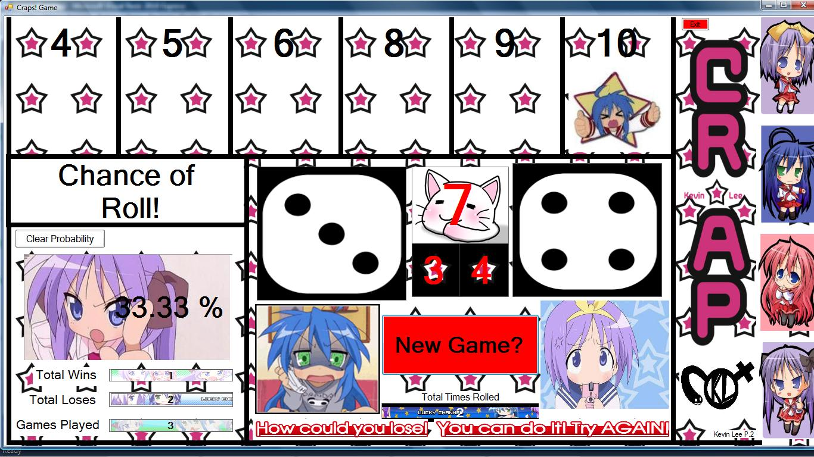

| 9/13/10 |
Good-bye Program |
The Good-bye Program is intended to
output good-bye in six different languages: English, Japanese,
French, Spanish, Korean, or Chinese. When the appropriate
button is pressed, the phrase is shown on the label above,
and the country's flag is displayed at the center of the screen.
|

|
| 10/21/10 and 10/29/10 |
Craps Game (Dice Roll) |
The Craps Game program is a replica of the real Craps game
played in casinos. The object of the game is fairly simple after you learn it once.
If the first roll of the die luckily rolls to a total of 7, then the player immediately
wins. If the total is a 2, 3, or 12 on the first roll, then the player loses. If it isn't
any of the previous numbers, the program will put a 'point' on that number. A point in
this game is like a marker. Continuing the rolls after getting a point on a number, if
the die rolls a sum of the number with the marker, the player wins. If the die rolls to a
7 after the first roll, then the player loses. |


|